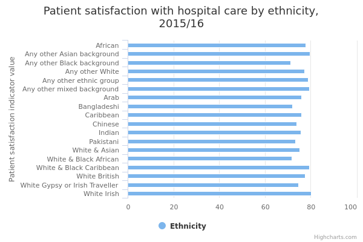

Inpatient satisfaction with hospital care
The main facts and figures show that:
- the average score for satisfaction with hospital inpatient care in 2015/16 was 77 out of 100
- on average, Irish inpatients had a satisfaction score of 80 out of 100 in 2015/16, the highest score for any ethnic group that year
- the satisfaction score of inpatients of Any other Black background was 71 out of 100, the lowest of any ethnic group in 2015/16
- in each of the 3 years presented, Irish patients had higher satisfaction scores, while Bangladeshi and Pakistani patients were among the least satisfied
Things you need to know
The number of respondents taking part in the survey each year is relatively large (78,000 in 2015/16, 59,000 in 2014/15 and 55,000 in 2013/14). Caution should still be used when comparing satisfaction levels between ethnic groups or over time. This is because the sample sizes for some of the ethnic groups presented may be small (all ethnic groups combined made up 14% of respondents in 2015/16).
The degree of uncertainty around survey estimates is greater when the number of respondents is small, and will be highest for minority ethnic groups. This is particularly the case for the Gypsy or Irish Traveller group, which had the lowest average satisfaction scores for 2013/14 and 2015/16. Their average score is not shown for 2014/15 as there were too few survey respondents in this group.
Where ethnic groups have consistently low or high scores over several survey years, this can somewhat offset the uncertainty around survey estimates from one year. For this measure there are only 3 years of data, however.
What the data measures
This data measures inpatient experience of hospital care.
The data source is the National Inpatient Survey, published by the Care Quality Commission (CQC). Twenty questions from the survey are used to calculate an average score for satisfaction on a scale from 0 to 100, where 0 is the least and 100 is the most. The statistics represent the average score out of 100 for survey respondents in each ethnic group.
Patients are eligible for the survey if they:
- are 16 years of age or over
- live in England
- have been discharged from an acute or specialist trust, with at least one overnight stay
Patients excluded from the survey include:
- those whose treatment related to maternity
- those admitted for the planned termination of a pregnancy
- day care patients
- private patients (non-NHS)
Why these ethnic categories were chosen
The standardised ethnic groups based on the 2011 census were used.
White:
- English/Welsh/Scottish/Northern Irish/British (“White British”)
- Irish
- Gypsy, Traveller or Irish Traveller
- Any other White background
Mixed/Multiple ethnic groups:
- White and Black Caribbean
- White and Black African
- White and Asian
- Any other Mixed/Multiple ethnic background
Asian/Asian British
- Indian
- Pakistani
- Bangladeshi
- Chinese
- Any other Asian background
Black/African/Caribbean/Black British:
- African
- Caribbean
- Any other Black/African/Caribbean background
Other ethnic group
- Arab
- Any other ethnic group
Inpatient satisfaction with hospital care by ethnicity

| 2013-14 | 2014-15 | 2015-16 | |
| All | 76.9 | 76.6 | 77.3 |
|---|---|---|---|
| White British | 77.1 | 76.8 | 77.5 |
| White Irish | 78.9 | 79.7 | 80.2 |
| White Gypsy or Irish Traveller | 59.0 | 74.5 | |
| Any other White | 77.8 | 75.4 | 77.3 |
| White & Black Caribbean | 75.5 | 82.1 | 79.3 |
| White & Black African | 68.6 | 78.1 | 71.6 |
| White & Asian | 75.5 | 75.5 | 75.1 |
| Any other mixed background | 80.7 | 70.1 | 79.3 |
| Indian | 73.9 | 74.0 | 75.6 |
| Pakistani | 72.3 | 72.0 | 73.4 |
| Bangladeshi | 70.8 | 72.7 | 72.0 |
| Chinese | 70.8 | 78.5 | 73.7 |
| Any other Asian background | 78.7 | 77.0 | 79.6 |
| African | 76.5 | 75.5 | 77.8 |
| Caribbean | 74.6 | 77.0 | 76.0 |
| Any other Black background | 72.8 | 77.1 | 71.1 |
| Arab | 71.6 | 72.5 | 75.8 |
| Any other ethnic group | 80.4 | 70.9 | 78.9 |
Summary
- Irish inpatients and those of Any other Asian background had the highest satisfaction with hospital services in 2015/16, with both groups having scores of about 80 out of 100
- in each of the 3 years, Irish patients were among the 3 most satisfied ethnic groups
- patients from Any other Black background and mixed White and Black African patients were the least satisfied with hospital services in 2015/16, with both groups scoring satisfaction at 71 out of 100 on average
- Bangladeshi and Pakistani patients were among the least satisfied with hospital care in each of the 3 years presented
- although Gypsy or Irish travellers had the lowest satisfaction score in 2015/16 and 2013/14 (71 and 59 respectively), caution is needed as few in this group took part in the survey, and figures for 2014/15 are not presented for this reason
- average satisfaction scores for all respondents rose slightly over the 3 years from 2013/14 and 2015/16, from 76.9 to 77.3
Download image and data
Methodology and type of data
Type of data
Survey
Purpose of data source
Understanding what a stay in hospital is like for patients provides key information about the quality of services across England. This understanding can be used to encourage improvements both nationally and locally. The importance of positive patient experience is increasingly recognised within the NHS.
Methodology
The CQC Adult inpatient survey is the major survey of inpatient experience of hospital services in England.
Data was collected from 1st September 2015 to 31st January 2016, from patients who stayed in hospital between 1st June and 31st August 2015. The 2015 inpatient survey involved 149 NHS acute and NHS foundation trusts in England. 78,311 questionnaires were successfully completed by patients; a response rate of 47%. The sample sizes achieved in 2013/14 and 2013/14 were lower: 58,624 in 2013/14 and 55,292 in 2014/15.
The purpose of the inpatient survey is to collect data for measuring and comparing the performance of individual NHS trusts, and it is important to be able to distinguish between the characteristics of different trusts. In addressing any potential bias, CQC standardise different organisations to a common average case-mix. This removes demographic differences as a source of variation and provides a 'level playing field' for comparing providers.
Trusts were asked to select a sample of patients who were discharged from hospital between 1st and 31st July (a small number of specialist trusts who could not reach the required sample size sampled back to 1 January 2015). This is slightly different to previous years when trusts could choose whether to select patients discharged in either June, July or August. This is not expected to disrupt the time series since discharges still occur at roughly the same time of year and therefore patient experience is not expected to be substantially different.
Certain groups of patients were excluded from the survey before trusts drew their samples, including:
- Patients who had died
- Children or young people under 16 years old during July 2015
- Women using obstetrics or maternity services, including those who had a spontaneous miscarriage
- Patients admitted for planned termination of pregnancy
- Psychiatry patients.
- Day case patients (patients who arrived and left hospital on the same day).
- Private patients (non-NHS).
- NHS patients treated at private hospitals.
- Any patients who were known to be inpatients at the time samples were drawn.
- Patients without a UK postal address.
- Patients who opted out of having their details used for anything except clinical care.
Further information is available on the Adult inpatient survey 2015
Rounding
Values are presented to one decimal place.